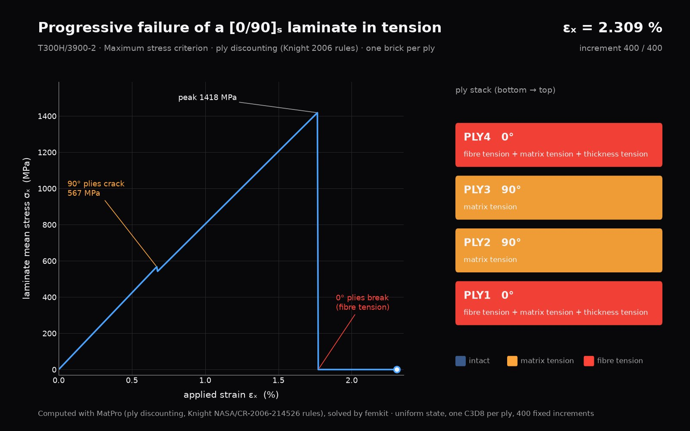
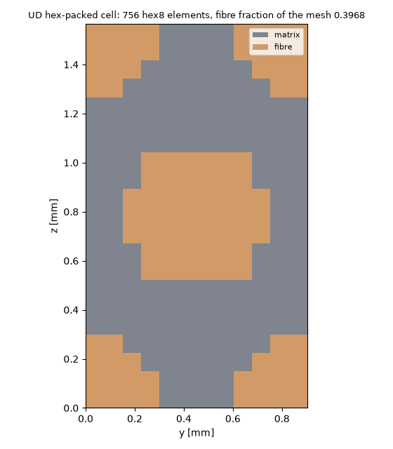
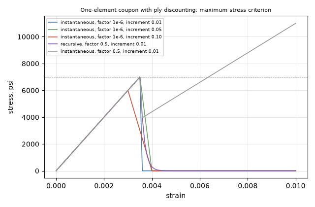

Four criteria, side by side
Maximum stress, maximum strain, Tsai-Wu and Hashin on the same ply, so you can see where they disagree.

Products / MatPro
Micromechanics, laminate design and failure analysis used to be separate tools. MatPro is all of them in one, on the same material data.

A finite element unit cell of fibre and matrix gives the ply's stiffness, expansion and conductivity.
Classical lamination theory gives the ABD matrix, engineering constants and the stress in every ply.
The analyser reads a solved shell model and checks every ply against the failure criteria.

[0/45/-45/90]s
Open-hole tension of a [(0/45/90/-45)2]s T300H/3900-2 plate, 100 x 36 mm with a 6 mm hole: CalculiX composite shells, every ply checked by MatPro at each load step. First ply failure at about 287 N/mm, against 1018 N/mm without the hole. No damage is modelled after first failure.
Maximum stress, maximum strain, Tsai-Wu and Hashin on the same ply, so you can see where they disagree.
Ply discounting as a material law: a failed ply loses stiffness and the load moves to the others.

The part, the process, the question. We reply with what a study would take and what it would show.